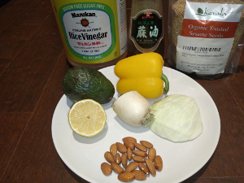
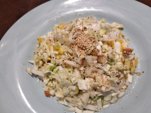

Cabbage Salad


Ingredients:
Whatever veggies you want. Here is one option:
- Cabbage, pickled red onion, pepper, green onion, cilantro, daikon radish, avocado, firm tofu, bean sprouts, cashews, asian pear (round yellowish-brown ones), black sesame
- Dressing: 60/40 toasted sesame oil to rice vinegar with half a lemon squeezed in. Creamy peanutbutter is optional.
How to make it:
"put stuff together"